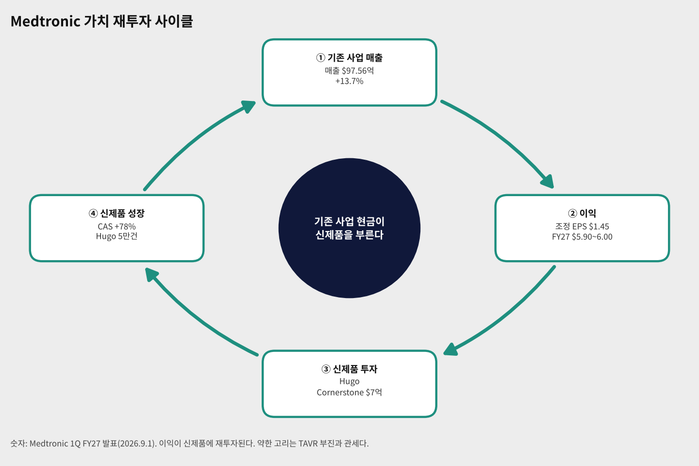

Medtronic은 여러 의료기기 사업을 한 회사에 묶어 병원에 판다. 신제품이 기존 제품의 성장 둔화를 메워야 한다.
| 항목 | 내용 |
|---|---|
| 종목 | Medtronic (MDT) · NYSE · 헬스케어(의료기기) · 아일랜드 더블린 |
| 최근 분기(1Q FY27) | 매출 $97.56억, 조정 EPS $1.45 |
| 핵심 사업 | 심혈관, 신경과학, 의료 외과, 당뇨(분리 중) |
| 직원 수 | 약 95,000명(트레이딩뷰) |
| 멀티플 | PER·PEG·P/S는 08~10 항목 표 참조 |
| 직책 | 인물 | 역할·특징 |
|---|---|---|
| 회장·CEO | 제프 마사(Geoff Martha) | CEO |
| CFO | (확인 필요) | 회사 공개 자료 기준 확인 필요 |
경영 스타일: 포트폴리오 재편. 당뇨 사업(MiniMed)을 분리하고 성장 사업에 집중하는 방식이다.
심장 절제(CAS)가 성장 시장의 2.5배 이상으로 커졌다.
Hugo 로봇 시술 5만건과 250대 설치를 목표로 한다.
다음 실적발표는 세 가지 질문에 답하는 자리다.
1. 심장 절제(CAS) 고성장이 이어지나?
2. FY27 유기 성장 6.75~7.25%를 지키나?
3. MiniMed 분리와 관세 부담은?
한 줄 판정 규칙: 첫 질문(CAS 성장)이 이어지면 약한 고리(TAVR 부진)가 가려진다.
일정: 2Q FY27 실적은 2026.11.24 발표 예정이다.
| 분기 | 매출 | 순이익 | EPS | 조정 EPS | 특이 사항 |
|---|---|---|---|---|---|
| 2Q FY25 | $84.0억 | $12.7억 | 0.99 | 1.26 | |
| 3Q FY25 | $82.9억 | $12.9억 | 1.01 | 1.39 | |
| 4Q FY25 | $89.3억 | $10.6억 | 0.82 | 1.62 | |
| 1Q FY26 | $85.8억 | $10.4억 | 0.81 | 1.26 | |
| 2Q FY26 | $89.6억 | $13.8억 | 1.07 | 1.36 | |
| 3Q FY26 | $90.2억 | $11.4억 | 0.89 | 1.36 | |
| 4Q FY26 | $98.1억 | $12.4억 | 0.96 | 1.55 | |
| 1Q FY27 | $97.6억 | $14.7억 | 1.14 | 1.45 | 매출 $97.56억(+13.7%), 심장 절제 +78% |
Medtronic 회계연도는 5월에 시작한다(1Q FY27은 2026.7.31 종료, 9.1 발표). 2Q FY27은 2026.11.24 발표 예정이다. 매출은 트레이딩뷰 스캐너의 분기 총매출이라 회사가 발표한 순매출과 다를 수 있다. 매출·순이익·EPS(GAAP 희석)는 트레이딩뷰 스캐너, 조정 EPS는 트레이딩뷰 실적 페이지의 Reported 값이다. 분기 정렬은 오래된 분기→최신이다.

흐름 요약: 최근 분기 매출은 $97.6억로 전년 동기 $85.8억 대비 +13.8%, 순이익은 $14.7억(전년 $10.4억)다. 최근 4분기 GAAP EPS는 $4.06, 조정 EPS는 $5.72다.
| 항목 | 내용 | 1Q FY27 성장 | 비고 |
|---|---|---|---|
| 전사 매출 | 보고 기준 | +13.7% | $97.56억 |
| 심장 절제(CAS) | 심장 절제 | +78% | 연 $20억 이상 |

사업부별 금액은 이 보고서에 수집하지 않아 성장률로 비교했다. 심장 절제 성장이 전사 성장을 끌고 있다.
Medtronic은 의료기기로 환자의 삶을 개선하는 것을 목표로 한다.
| 축 | 내용 |
|---|---|
| 성장 축 | CAS, Hugo |
| 가이던스 | FY27 조정 EPS $5.90~6.00 |
| 구조 | MiniMed 분리 |

| 이동평균 | 값 | 종가 대비 | 위치 |
|---|---|---|---|
| 5일선 | $101.95 | -1.2% | 종가 아래 |
| 20일선 | $99.73 | +1.0% | 종가 위 |
| 50일선 | $94.27 | +6.8% | 종가 위 |
| 100일선 | $90.73 | +11.0% | 종가 위 |
| 200일선 | $88.25 | +14.1% | 종가 위 |
52주 고가 $106.33(2025-11-26)·저가 $73.31(2026-06-02) 범위에서 종가 $100.72는 20일선, 50일선, 100일선, 200일선을 웃돌고 5일선은 밑돈다.
| 규칙 | 기준 | 현재 값 | 신호 |
|---|---|---|---|
| 장기 추세 필터 | 종가 vs 200일선 | $100.72 > $88.25 | 매수 |
| 중장기 교차 | 50일선 vs 200일선 | $94.27 > $88.25 | 매수 |
| 단기 교차 | 20일선 vs 50일선 | $99.73 > $94.27 | 매수 |
| 돈키언 채널 | 55일 고가 $106.20 / 저가 $85.22 | 중간값 $95.71 위 | 매수 |
| 1개월 모멘텀 | 21거래일 수익률 | +6.4% (기준 $94.63) | 매수 |
| 3개월 모멘텀 | 63거래일 수익률 | +9.1% (기준 $92.30) | 매수 |
| 6개월 모멘텀 | 126거래일 수익률 | +28.9% (기준 $78.15) | 매수 |
| 12개월 모멘텀 | 252거래일 수익률 | +4.6% (기준 $96.28) | 매수 |
| 종합 (8개 평균) | +1.00 | 강한 매수 |
해석: 매수 신호 8개(장기 추세 필터, 중장기 교차, 단기 교차, 돈키언 채널, 1개월 모멘텀, 3개월 모멘텀, 6개월 모멘텀, 12개월 모멘텀), 매도 신호 0개(없음). CTA 점수 +1.00(강한 매수). 14일 ATR $2.62 (2.6%), 52주 고가 $106.33 · 저가 $73.31.
| 가격 | 기준 | 무엇이 바뀌나 |
|---|---|---|
| $106.20 | 55일 고가 | 돌파 시 채널 상단 갱신 |
| $96.28 | 12개월 모멘텀 기준가 | 종가가 이 가격 위면 12개월 신호 매수 |
| $95.71 | 돈키언 중간값 | 55일 채널 중간값 위/아래로 신호가 바뀜 |
| $94.63 | 1개월 모멘텀 기준가 | 종가가 이 가격 위면 1개월 신호 매수 |
| $92.30 | 3개월 모멘텀 기준가 | 종가가 이 가격 위면 3개월 신호 매수 |
| $88.25 | 200일선 | 종가가 이 선 위/아래인지로 장기 추세 신호가 바뀜 |
| $85.22 | 55일 저가 | 이탈 시 채널 하단 갱신 |
| $78.15 | 6개월 모멘텀 기준가 | 종가가 이 가격 위면 6개월 신호 매수 |
가격 수준은 신호가 바뀌는 기준선일 뿐 진입·청산 가격 제안이 아니다. 20일/50일 교차는 이동평균 자체가 움직여 단일 가격으로 표시하지 않았다. 일봉·주봉은 종가 기준 직접 계산(고저 데이터 미사용)이다.
| 악재 요인 | 내용 | 강도 |
|---|---|---|
| TAVR 부진 | TAVR이 부진 | 중간 |
| 관세 | 관세 노출 증가 | 중간 |
| 분리 위험 | MiniMed 분리 일정과 비용 | 참고 |
| 티커 | 회사 | PER(TTM) | PEG | P/S | EPS 성장(YoY) |
|---|---|---|---|---|---|
| MDT | Medtronic | 17.6배 | 5.12 | 3.43배 | +3% |
| BSX | Boston Scientific | 18.5배 | 0.69 | 2.97배 | +26% |
| SYK | Stryker | 33.9배 | 1.45 | 4.64배 | +23% |
| ABT | Abbott | 38.6배 | – | 3.77배 | -66% |
| EW | Edwards Lifesciences | 61.3배 | – | 9.12배 | -27% |
비교 결론: Medtronic의 PER 17.6배는 Boston Scientific·Stryker·Abbott·Edwards Lifesciences보다 낮다. PEG 5.12는 Boston Scientific(0.69)·Stryker(1.45)보다 높다.
현금·부채는 트레이딩뷰 스캐너 값이다. MiniMed 분리 영향은 반영되지 않았다.
| 지표 | 값 | 출처 | 해석 |
|---|---|---|---|
| 현금·단기투자 | $88억 | 트레이딩뷰 스캐너(최근 분기) | |
| 총부채 | $282억 | 트레이딩뷰 스캐너(최근 분기) | |
| 순부채(부채−현금) | $194억 | 내 계산 | 현금 대비 부채 부담 |
| 잉여현금흐름(TTM) | $61억 | 트레이딩뷰 스캐너 | |
| TTM 매출 | $375억 | 트레이딩뷰 스캐너 |
| 기준 | 매출 | P/S | 비고 |
|---|---|---|---|
| 내 계산(종가 ÷ 최근 4분기 매출 합계) | $375.5억 | 3.43배 | 시총은 정렬용 데이터에서만 사용 |
| 동종(트레이딩뷰) | – | BSX 2.97배 · SYK 4.64배 · ABT 3.77배 · EW 9.12배 | 11.19 |
해석: 분리 이후 대차대조표가 바뀔 수 있다(내 해석).
EBITDA는 영업활동의 현금 창출력을 보는 지표이고, PEG는 PER을 EPS 성장률로 나눈 값이다. EBITDA·FCF는 트레이딩뷰 TTM 값이다.
| 지표 | 값 | 산출 |
|---|---|---|
| EBITDA(TTM) | $104억 | 트레이딩뷰 스캐너 |
| EBITDA 마진 | 27.7% | EBITDA ÷ TTM 매출(내 계산) |
| FCF 마진 | 16.3% | FCF ÷ TTM 매출(내 계산) |
| PER(GAAP TTM) | 24.8배 | $100.72 ÷ $4.06 |
| PER(조정 TTM) | 17.6배 | $100.72 ÷ $5.72 |
| 방식 | PER | EPS 성장률 | PEG | 판정 |
|---|---|---|---|---|
| 조정 EPS (TTM $5.72) | 17.6배 | +3% ($5.53 → $5.72) | 5.12 | 기준 초과 |
| GAAP EPS (TTM $4.06) | 24.8배 | +12% ($3.63 → $4.06) | 2.09 | 기준 초과 |
판정: 조정 EPS 기준 PEG 5.12 → 1.0 초과 PEG 기준은 1.0 이하 투자 적격, 0.5 이하 적극 매수다. EPS 성장률은 최근 4분기 EPS 합계를 직전 4분기 합계와 비교한 값(내 계산)이고, 일회성 항목이 있으면 조정 EPS 행을 함께 본다.

Medtronic의 사이클: 기존 사업 이익이 신제품 투자로 가서 신제품 성장이 다시 매출이 된다.
| 고리 | 현재 숫자·근거 |
|---|---|
| ① 기존 사업 매출 | 1Q FY27 매출 $97.56억(+13.7%) |
| ② 이익 | 조정 EPS $1.45 · FY27 가이던스 $5.90~6.00 |
| ③ 신제품 투자 | Cornerstone Robotics $7억 계약 |
| ④ 신제품 성장 | CAS +78% · Hugo 시술 5만건 |
사이클의 특징: 약한 고리는 TAVR 부진과 관세다. "(내 해석)"은 보고서 수치가 아닌 해석이다.